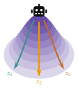
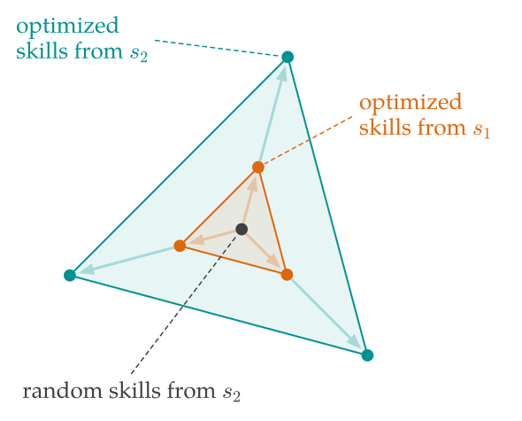
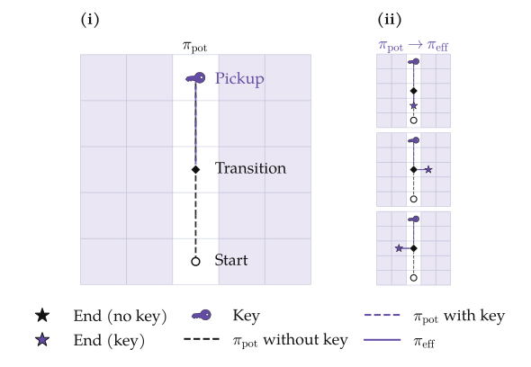
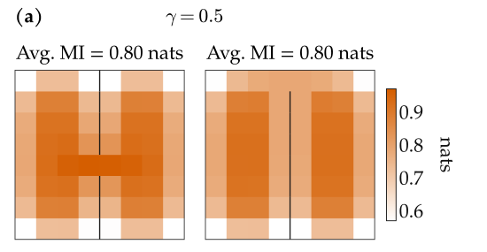
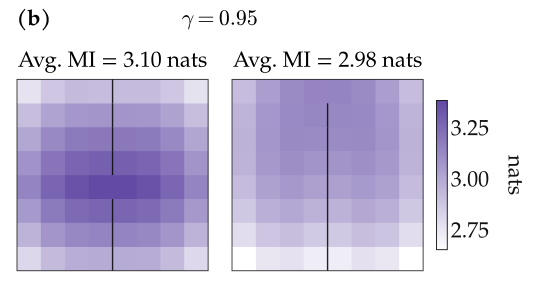
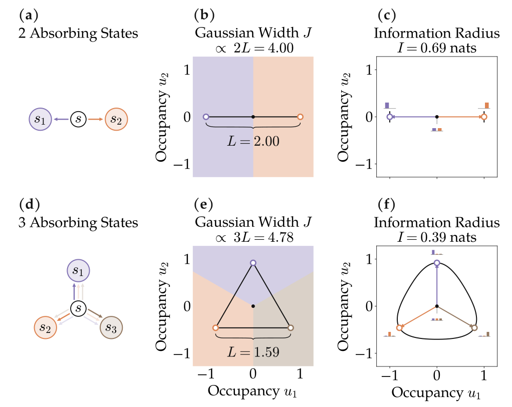
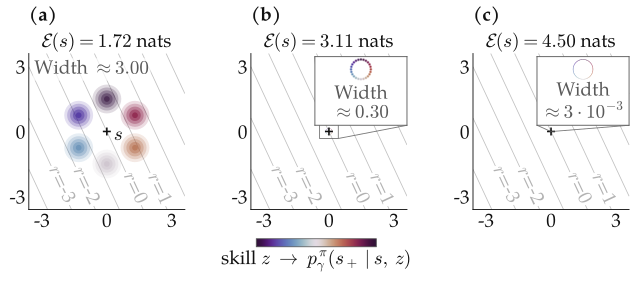

Abstract
Empowerment captures the capacity for an agent to actively control its environment. While conceptually appealing as an information-theoretic quantity, the connection between empowerment and structurally central states that provide broad access to future outcomes has remained an open question. In this work, we link empowerment maximization and skill-learning methods to provide new geometries for interpreting and analyzing empowerment. Our analyses answer longstanding open questions on the connections between empowerment and structural centrality. Our analyses also reveal distinctions between information and reward geometries, highlighting important theoretical implications to build scalable empowerment-maximization methods.
Potential and Effective Empowerment.
We consider two forms of empowerment: potential (the maximal empowerment that could be achieved at a state) and effective (the actualized influence of a particular skill-conditioned policy (i.e., collection of policies) at a given state on the future state distribution).
In the example of the mountain in Fig. 1, a potential empowerment policy ascends the mountain to a state from which the agent has options. Meanwhile, the effective empowerment policies actively exercise options and descend the mountain in different directions.

High Empowerment States are Central in Information Geometry.
Prior work has found empirically that high empowerment states are central states in an MDP, relating empowerment to the volume of reachable states in discrete, deterministic settings [3]. Here, we extend definitions of centrality to the full MDP setting with stochasticity and continuous states.
Maximizing the mutual information (effective empowerment) for a given starting state corresponds to learning skills that reach vertices of the set of reachable state occupancies.
Theorem 4.1. Potential empowerment is the KL radius of the reachable polytope, extending Eysenbach et al. [30, Lem. 6.1–6.2].
The optimized skills span the maximal information radius of the reachable polytope given starting state $s_0$. Potential empowerment measures the maximal information radius at a particular state. See Fig. 3(a).
This result shows that an exploration agent maximizing potential empowerment will seek central states in the information geometry. Then, to maximize potential empowerment, an agent searches among these starting states for the largest reachable region.
Thus, prior work on empowerment was correct in conjecturing that empowerment maximization has a formal connection to centrality. However, the right geometry for studying this centrality is not (say) the Euclidean metric on states, but rather the KL divergence between state distributions induced by different skills (Fig. 3).
A simple tabular experiment demonstrates this notion of centrality (Fig. 3(b)).

(a) State occupancy simplex

(b) Potential policy finds central states.
Figure 3. Potentially empowered states are central states in the polytope. Tabular intuition for Theorem 4.1.
(a) We can use a probability simplex $\Delta(\mathcal{S})$ to visualize the discounted state occupancy measures of each skill (circles). Orange circles indicate the best set of skills starting from state $s_1$, and teal circles indicate the best skills starting from state $s_2$. The skills starting from $s_1$ define a smaller polytope (orange points) in the simplex than $s_2$ (teal points) as a result of their transition dynamics, so the potential empowerment is higher at $s_2$ than $s_1$.
(b) We use a GridWorld to illustrate the connection between centrality and tool use. An agent in the GridWorld begins at the bottom of the hallway. The agent can set down and pick up a key at the top of the hallway. The key provides the agent access to shaded regions of the MDP. (b, i) A potentially empowered agent picks up the key then navigates to the center of the room, correctly identifying the middle state with the key as the most central state. (b, ii) From the center, the agent can execute the maximal number of distinguishable skills. See Appendix I.3 for experimental details.
Empowerment, Bottlenecks, and Temporal Distance
Beyond information geometry, the empowerment objective has a direct hitting time interpretation in discrete state spaces. Suppose that the agent has multiple trial trajectories to reach a future state, where each trajectory rolls out a skill from the same starting state until a geometric termination time.:
Lemma 4.2. Bottleneck states are high potential empowerment states.
In tabular settings, potential empowerment measures the reduction in time to reach future states over independent rollouts, when committing to an option/skill.
Intuitively, this property corresponds to bottleneck states, or states that connect diverse reachable regions. Consider GridWorlds with a door, or a “bottleneck” (Fig. 4). Adding slim openings (“bottlenecks”) to the grid shifts the high empowerment states from the center of the room to the bottleneck openings, prioritizing states where committing to a skill (e.g. move left or move right) quickly reaches different regions.


However, hitting times are not well-defined in continuous geometries, where hitting a particular state is a measure-zero event. The temporal distance is an object that remains well-defined in continuous settings and reduces to hitting times in the discrete limit [7].
In our paper, we show that a closely-related empowerment objective over contiguous skill rollouts, where the agent re-samples a skill at each geometric termination in a single trajectory, admits an exact temporal distance formulation [7] (Appendix C.2). This empowerment object measures the reduction in temporal distance to future states after committing to a skill, recovering a hitting-time interpretation in the discrete, deterministic limit.
Is Empowerment Optimal for Downstream Adaptation?
Prior works conjecture that empowerment is a generic way for agents to do goal-oriented tasks. However, empowerment does not have immediate obvious connections to downstream task performance.
To formalize adaptation when rewards are not available during training, we define an adaptation objective with respect to a reward prior distribution $\mathcal R$. For the following result, we consider linear adaptation objective $J$ for the skill set learned by an empowerment-maximizing agent, which is exactly the best skill's return averaged over the reward prior.
Potential empowerment lower bounds skill adaptation under an uninformed reward prior.
Theorem 4.3. In tabular settings, empowerment lower bounds adaptation to rewards drawn from an uninformed, isotropic Gaussian prior.
Here, we define adaptation as a skill adaptation to a sampled reward. At test time, an agent must select a skill $z \in \mathcal Z$ to adapt to a sampled reward function $r \sim \mathcal R$. The reward prior treats all states the same and does not prefer particular states.
In the best case, the agent selects the skill $z$ with the highest expected return.
The First Limitation of Empowered Adaptation: Gaussian widths versus KL divergence.
There remain questions: (1) is the bound tight? and, correspondingly, (2) does the bound extend to continuous state geometries? Generally, no. Without additional assumptions, reward adaptation geometry and information geometry are different.
Gaussian width measures the spread of the skills' future occupancies and controls the adaptation geometry [32]. The width is large when different skills reach futures with clearly different values (Fig. 5, (b,e)). This geometry is different from information geometry, where distance is given by KL.
The adaptation result is a bound, not a ranking result.
Consider the simple example in Fig. 5 comparing two starting states. An agent optimizing adaptation and an agent optimizing empowerment will choose two different states, showing that while the lower bound holds, it does not guarantee a ranking result.

Figure 5. Discrepancy between information geometry and reward adaptation geometry in discrete settings.
(a) By going left/right from $s$, an agent can reach node $s_1$ or $s_2$ with high likelihood, so there are two easily separable skills from $s$. (d) Targeting nodes $s_1$, $s_2$, or $s_3$ can make the agent inadvertently land in other nodes, so there are three somewhat separable skills from $s$.
(b,e) The MDPs in (a) and (d) admit polytopes of feasible state occupancies in the simplex, visualized by the segment and triangle. (b) Axis $u_1$ trades off occupancy of $s_1$ vs. $s_2$. (e) Axis $u_1$ trades off occupying $s_2$ vs. $s_3$; axis $u_2$ trades off occupying $s_1$ vs. $s_2$ / $s_3$. Return is linear in the state occupancy, so we can also represent reward functions as vectors in state-occupancy space corresponding to the reward weights. The color indicates the best adapted skill for that reward coordinate. The polytope in (e) has a larger Gaussian Width than that in (b), supporting better adaptation.
(c,f) However, increased skill separability in (a) gives larger information radius and MI, where the black contour indicates the maximal MI. Thus, even though empowerment is higher for the 2 state system (a) versus the 3 state system (d), the 2 state system has worse adapted returns. See Appendix I.4 for details.
The information ball can collapse in the continuous limit
In the continuous state limit, the difference between empowerment and adaptation geometry becomes more salient:
Theorem 4.4. Large empowerment does not mean better adaptation to smooth rewards in continuous state space.
Many skills can be distinguishable while giving identical returns for a smooth reward function.

The Second Limitation of Empowered Adaptation: Controllable Degrees of Freedom versus Rewarding Degrees of Freedom.
While the adaptation result of Theorem 4.3 requires an isotropic reward prior, naive empowerment maximization cannot generally provide adaptation guarantees for reward priors that prefer certain states over others (i.e., anisotropic priors).
Without external information, empowerment can only break symmetry across states via controllability. Then, the reward prior is free to vary over state occupancies that empowerment does not naturally select:
Theorem 4.5. Informal statement that large MI need not imply adaptation to anisotropic reward function priors in discrete settings.
A state can have arbitrarily large MI while adaptation with respect to an anisotropic reward prior is arbitrarily close to zero.
We can reinterpret Fig. 5 as an example where the maximizing MI selects for skills that do not control degrees of freedom relevant to the anisotropic return: if the variation in an anisotropic reward prior concentrates on three absorbing states in Fig. 5(d), an empowerment-maximizing agent will ignore those reward-relevant states and, instead, navigate towards the state with maximal channel capacity. The skill set is not optimal for adapting to an anisotropic reward prior.
Conclusion
In this work, we analyze the geometry of empowerment.
- Our theoretical results show that high potential empowerment states are central states in information geometry (Theorem 4.1).
- The empowerment objective and a close variant also admit exact hitting time interpretations and capture centrality in a temporal distance geometry (Lemma 4.2, Proposition C.1).
- In tabular settings, empowerment lower bounds an agent's ability to adapt to unknown rewards sampled from an uninformed prior.
- However, in more general settings with smooth rewards in continuous state spaces or reward priors that prefer some states over others, these bounds no longer hold.
Thus, while empowerment has attractive properties in addition to a straightforward information-theoretic interpretation, there exist theoretical gaps between the empowerment object and downstream task adaptation. Scalable formulations of empowerment maximization must address the discrepancy between information and reward adaptation geometries.
BibTeX
@misc{ji2026geometry,
title={The Geometry of Empowerment},
author={Ji, Catherine and Myers, Vivek and Levine, Sergey and Eysenbach, Benjamin},
year={2026}
}